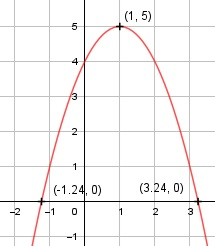

Aufgabe 13 f(x) = 4 + 2x - x2 f'(x) = 2- 2x, f''(x) = - 2, f'''(x) = 0 Definitionsbereich: -∞ < x < ∞ Wertebereich: -∞ < f(x) ≤ 5 Asymptoten: - Symmetrie: - Nullstellen: -x2 + 2x + 4 = 0 |:(-1) x2 -2x - 4 = 0 p, q - Formel: p = -2, q = -4 x1,2 = x1,2 = 1 ± x1,2 = 1 ± x1,2 = 1 ± 2,24 x1 = 3,24 x2 = -1,24 N1(3,24|0), N2(-1,24|0) Schnittpunkt mit der y-Achse: f(0) = - 02 + 2 * 0 + 4 = 4 Sy(0|4) Extrempunkte: 2 - 2x = 0 |+2x 2x = 2 |:2 x = 1, f(1) = -12 + 2 * 1 + 4 = 5 f''(x) = -2 < 0 --> Hochpunkt (1|5) Alternativ: Scheitelpunktberechnung f(x) = - x2 + 2x + 4 |:(-1) f(x) ------ = x2 - 2x - 4 -1 f(x) ------ = (x - 1)2 - 1 - 4 |*(-1) -1 f(x) = -(x - 1)2 + 5 S(1|5) Wendepunkte: -2 = 0 --> Widerspruch, keine Wendepunkte Graph:
